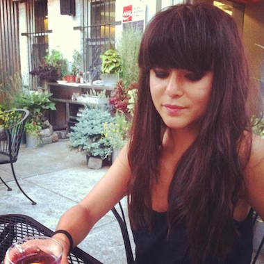
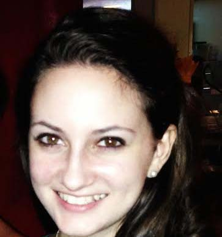

Obviously Social is a social media marketing company. We're strategists, writers, and builders who approach social as a solution to our clients' real-world business problems. Working with global Fortune 100 companies and startups alike, we provide creative marketing solutions driven by measurable results.
Team
Another great thing about us? In addition to being social media experts, we're smart and fun to work with. Meet the team!
MAE KARWOWSKI, Founder & CEO / @maewow
Mae is the CEO/Founder of Obviously Social. Recognized for her thought leadership in social, she directs the social strategy, product development and influencer marketing for all OS clients, focusing on retail and media. Before founding Obviously Social, Mae directed social media for Gilt City, part of Gilt Groupe, and oversaw social execution for clients such as Bravo, UGG, and Coca Cola with the agency 360i. She attended St Paul’s School and then matriculated at the University of North Carolina at Chapel Hill.
LAUREN B. MANGIAFORTE, Strategist / @LBMForte
Lauren is a writer and digital strategy expert. Before joining OS, she worked as a digital media and branding consultant for media companies and brands such as AOL, NewsCred, and Trish McEvoy. Hailing from Chicagoland, she holds a BA from Saint Mary's College (Notre Dame, IN) and a master's in literature from the University of St Andrews in Scotland. Lauren's work as a journalist has appeared on a variety of websites, and her first novel, The Boys Who Wouldn't Grow Up, was published in 2013.
Specialties: live events, audits, training

SAYA WEISSMAN, Strategist / @SWeissman
Saya is a journalist and writer. Before coming to Obviously Social, Saya was assistant editor of brands at Digiday. She spent years covering the digital media and advertising industry, focusing on how brands are using social and digital in their marketing efforts, along with ad agency business challenges and culture. You can read all of her articles here. Saya is a graduate of the University of Southern California, with a B.A. and honors in English-Creative Writing. Specialties: influencer campaigns and relationships, content creation
MIRIAM WAKIM, Strategist / @meemkeem
Miriam is a social media expert and international relations specialist. Before joining Obviously Social, Miriam worked with Yale University's Program on Governance and Local Development, the United Nations in Syria and New York, Women's Voices Now, and as an ESL teacher in France. Miriam is also currently Al-Monitor's social media editor. She holds a BA in Political Science and Near Eastern Languages and Cultures from Indiana University, and an MA in Middle Eastern Studies from New York University. Miriam speaks Arabic and French and is attempting a climb to Norwegian proficiency. Specialties: international marketing, media, and analytics.

KAITLIN MCKENNA, Social Media Assistant Manager / @mckait15
Kaitlin is a copywriter and social media relationships expert. She began her OS career as an intern during her senior year at Fordham University, where she graduated with a BA in English. As account manager at OS, she oversees influencer relations as well as the Obviously Studio platform. Kaitlin can otherwise be found with her nose in a book and hopes to one day pen the next Great American Novel.
Specialties: copywriting, influencer relationships
SANDIA TRENT, VP, Strategy & BD
Sandia Trent is an digital marketing leader and analyst. Before joining Obviously Social, she led data and content-driven marketing efforts at media giants such as Vimeo and Inc. 500 startups. She developed digital marketing partnerships with international retail brands such as Net-a-Porter, Glamour-Sales, and Meilishuo. Sandia is a graduate of Barnard College, Columbia University and grew up in Macau, China. Sandia is fluent in Mandarin and Cantonese. In her free time, she devours books and meditates atop a field of handbags.
CHUCK ROUTHIER, Designer
Chuck has over 25 years of design experience. He has worked on comprehensive branding programs for clients like Hertz, Burger King, Clairol, Merrill Lynch, and Morgan Stanley. Chuck served as creative director at Landor Associates in NYC and Vice President/Creative Director of Brand Anatomy. Prior to Landor, Chuck was associate Creative Director at CKS Partners in New York and Art Director at Clement Mok designs in San Francisco where he worked with Apple and other technology companies. He has been a principal owner of several small design firms in New York and San Francisco and co-founded dsgnfix, a search, discover and inspiration iPhone app. He holds an MFA in Graphic Design from Yale University and has taught at Yale, Maine College of Art and Parsons School of Design. Chuck designs and crafts lighting and furniture and has two sons and a daughter.
Team
Another great thing about us? In addition to being social media experts, we're smart and fun to work with. Meet the team!
MAE KARWOWSKI, Founder & CEO / @maewow
Mae is the CEO/Founder of Obviously Social. Recognized for her thought leadership in social, she directs the social strategy, product development and influencer marketing for all OS clients, focusing on retail and media. Before founding Obviously Social, Mae directed social media for Gilt City, part of Gilt Groupe, and oversaw social execution for clients such as Bravo, UGG, and Coca Cola with the agency 360i. She attended St Paul’s School and then matriculated at the University of North Carolina at Chapel Hill.
LAUREN B. MANGIAFORTE, Strategist / @LBMForte
Lauren is a writer and digital strategy expert. Before joining OS, she worked as a digital media and branding consultant for media companies and brands such as AOL, NewsCred, and Trish McEvoy. Hailing from Chicagoland, she holds a BA from Saint Mary's College (Notre Dame, IN) and a master's in literature from the University of St Andrews in Scotland. Lauren's work as a journalist has appeared on a variety of websites, and her first novel, The Boys Who Wouldn't Grow Up, was published in 2013. Specialties: live events, audits, training
SAYA WEISSMAN, Strategist / @SWeissman
Saya is a journalist and writer. Before coming to Obviously Social, Saya was assistant editor of brands at Digiday. She spent years covering the digital media and advertising industry, focusing on how brands are using social and digital in their marketing efforts, along with ad agency business challenges and culture. You can read all of her articles here. Saya is a graduate of the University of Southern California, with a B.A. and honors in English-Creative Writing. Specialties: influencer campaigns and relationships, content creation
MIRIAM WAKIM, Strategist / @meemkeem
Miriam is a social media expert and international relations specialist. Before joining Obviously Social, Miriam worked with Yale University's Program on Governance and Local Development, the United Nations in Syria and New York, Women's Voices Now, and as an ESL teacher in France. Miriam is also currently Al-Monitor's social media editor. She holds a BA in Political Science and Near Eastern Languages and Cultures from Indiana University, and an MA in Middle Eastern Studies from New York University. Miriam speaks Arabic and French and is attempting a climb to Norwegian proficiency. Specialties: international marketing, media, and analytics.
KAITLIN MCKENNA, Social Media Assistant Manager / @mckait15
Kaitlin is a copywriter and social media relationships expert. She began her OS career as an intern during her senior year at Fordham University, where she graduated with a BA in English. As account manager at OS, she oversees influencer relations as well as the Obviously Studio platform. Kaitlin can otherwise be found with her nose in a book and hopes to one day pen the next Great American Novel. Specialties: copywriting, influencer relationships
SANDIA TRENT, VP, Strategy & BD
Sandia Trent is an digital marketing leader and analyst. Before joining Obviously Social, she led data and content-driven marketing efforts at media giants such as Vimeo and Inc. 500 startups. She developed digital marketing partnerships with international retail brands such as Net-a-Porter, Glamour-Sales, and Meilishuo. Sandia is a graduate of Barnard College, Columbia University and grew up in Macau, China. Sandia is fluent in Mandarin and Cantonese. In her free time, she devours books and meditates atop a field of handbags.
CHUCK ROUTHIER, Designer
Chuck has over 25 years of design experience. He has worked on comprehensive branding programs for clients like Hertz, Burger King, Clairol, Merrill Lynch, and Morgan Stanley. Chuck served as creative director at Landor Associates in NYC and Vice President/Creative Director of Brand Anatomy. Prior to Landor, Chuck was associate Creative Director at CKS Partners in New York and Art Director at Clement Mok designs in San Francisco where he worked with Apple and other technology companies. He has been a principal owner of several small design firms in New York and San Francisco and co-founded dsgnfix, a search, discover and inspiration iPhone app. He holds an MFA in Graphic Design from Yale University and has taught at Yale, Maine College of Art and Parsons School of Design. Chuck designs and crafts lighting and furniture and has two sons and a daughter.
Are you an influencer? Apply here.